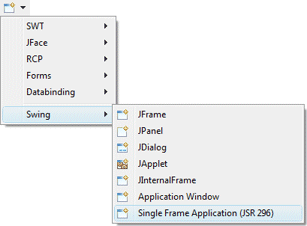

|
Subclasses of the Swing SingleFrameApplication class can be
created using the Swing Single Frame Application (JSR 296) wizard. The wizard can be
selected from the drop down wizard menu or from the
Eclipse New wizard.
To use the wizard, select the project source folder and package to contain the class. Then enter the class name and hit the Finish button. The org.jdesktop.application.SingleFrameApplication class is the default superclass. You can select an alternative superclass by entering its name into the Superclass field or by choosing it via the bottom Browse button. |
|
|
|
java.awt.Dimension; import javax.swing.ActionMap; import javax.swing.JPanel; import org.jdesktop.application.ApplicationContext; import org.jdesktop.application.SingleFrameApplication; public class SwingSingleFrameApplication extends SingleFrameApplication { private JPanel topPanel; @Override protected void startup() { topPanel = new JPanel(); topPanel.setPreferredSize(new Dimension(500, 300)); show(topPanel); } public static void main(String[] args) { launch(SwingSingleFrameApplication.class, args); } } When editing Swing SingleFrameApplications, all of the standard Swing layouts, containers, widgets and menus are available. Custom or third party controls may be added via the Choose Component command. You may also preview your frame using different look and feels using the drop down look and feel list in the toolbar. |